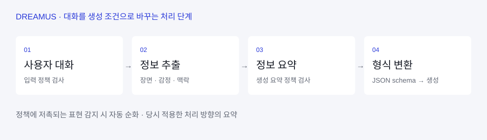

제품 판단을 개발 범위와
연결한 10인 협업.
꿈을 대화로 구체화하고 AI 장면을 생성해 VR에서 감상하는 플랫폼
제안·선정부터 완료까지 PM. AI 대화·프롬프트·UI/UX와 팀별 구현 범위 조율
3단계 프롬프트, Flux 전환, 입력·요약 이중 검사, 대기 중 대화·명상 배치
Oculus 앱·웹 갤러리·오프라인 체험관 운영. 프로젝트 전체 오프라인 관객 524명
의도가 빠지는 생성 요청,
끝을 알기 어려운 대기.
단편적인 꿈 이야기만으로는 사용자가 떠올린 장면과 감정을 생성 결과에 담기 어려웠습니다. 생성 요청이 거부되거나 재시도가 길어지는 문제도 있어, 대화와 생성 대기를 하나의 경험으로 다뤘습니다.
배경·사건·감정과 개인적 맥락을 수집
거부·지연과 모델별 표현 차이에 대응
불규칙한 생성 시간에 맞춰 활동과 탐색 범위 조정
대화 내용을 바로 보내지 않고,
생성 조건으로 구조화.
배경·사건·키워드에서 출발해 이미지의 세부 묘사와 감정, 연결되는 삶의 경험을 질문했습니다. 이 내용을 정보 추출·요약·생성 형식 변환으로 나누는 프롬프트를 직접 설계했습니다.
대화에서 장면·감정·개인 맥락을 수집
이미지에 반영할 조건으로 정리
JSON schema로 출력 형식 고정
프롬프트와 단계별 출력 형식의 방향을 정의하고, 개발팀과 대화 종료 조건·생성 요청 전달 방식을 구체화했습니다. 아래 도식은 경력기술서에 근거한 처리 단계 요약입니다.

생성 품질과 기다리는 경험을
함께 비교해 모델을 전환.
DALL·E·Flux·SDXL을 사용자 시나리오와 생성 시간으로 비교했습니다. 이미지 품질과 의도 반영뿐 아니라, 360도 VR에서 낯선 장면이 주는 두려움을 고려해 친근한 표현을 평가 기준에 포함했습니다.
| 비교 대상 | 경력기술서에 기록된 평균 생성 시간 | 의사결정에서의 의미 |
|---|---|---|
| SDXL | 약 470초 | 대기 중 이탈 가능성을 고려할 필요 |
| Flux | 약 2.11초 | 대기 부담을 낮출 후보로 판단 |
| DALL·E | 시간 수치 미기재 | 당시 사용 모델 · 최종적으로 Flux로 전환 |
팀의 사용 모델을 DALL·E에서 Flux로 전환했습니다. 위 수치는 당시 비교 기록이며 동일 조건의 성능 배수나 서비스 전체 지연 개선율로 환산하지 않았습니다.
측정 환경·표본 수·분산이 이 자료에 제시되지 않아, 모델 일반 성능이나 실제 이탈률 감소로 해석하지 않습니다.
제약을 발견한 지점마다
제품의 동작을 바꿨습니다.
| 제약 | 판단 | 반영한 동작 |
|---|---|---|
| 길고 불규칙한 생성 시간 | 대기 중 이탈 가능성 고려 | 감정 대화와 명상 배치 |
| 전시되는 꿈의 누적 | 서버 운영·실행 부담 고려 | 꿈 5개 무작위 표시와 셔플 탐색 |
| 정책에 저촉되는 표현 | 생성 이전에 입력·요약을 검사 | 문제 표현을 자동 순화하는 처리 적용 |
폭력·선정성, 실존 인물, 저작권 캐릭터 요청을 콘텐츠 정책의 검토 대상으로 다뤘습니다. OpenAI Moderation API를 대화 입력과 생성 요약 출력에 적용하고, 감지된 표현을 자동으로 순화해 생성하는 방향을 개발팀과 함께 적용했습니다.
이중 검사와 순화는 당시 적용한 대응입니다. 모든 정책 범주의 자동 탐지나 안전성을 검증한 결과를 뜻하지 않습니다.
생성의 앞뒤에,
구체화와 판단의 단계를 둔다.

꿈을 단계적으로 말하고 생성 결과를 확인하는 과정이 있으면, 참여자가 자신이 원하는 경험을 구체화하는 데 도움이 될 수 있다.
배경 · 주요 이미지 · 감정
결과를 확인하고 수정하는 흐름
탐색 · 진입 · 반응
꿈 작업장은 만들기와 확인, 꿈 전시장은 탐색과 공유에 초점을 맞췄습니다. 두 공간을 연결해 개인의 생성 경험이 다른 사람의 참여로 이어지도록 설계했습니다.
경험 단계마다,
팀이 제작할 산출물을 연결했다.
10인 팀에서 대화 구조·프롬프트 실험·UI/UX를 설계하고, 역할별 업무 분배와 디자인·개발 요구사항을 정리했습니다. 경험 흐름을 제작 단위로 구체화하는 역할을 맡았습니다.
표를 좌우로 밀어 전체 내용을 볼 수 있습니다.
| 경험 단계 | 설계 범위 | 협업 산출물 |
|---|---|---|
| 대화 | 질문 순서와 사용자 흐름 | 대화 스크립트 · 시나리오 |
| 생성 | 프롬프트와 확인·재생성 분기 | 생성 요구사항 · 승인 흐름 |
| 전시 | 탐색·진입·반응 | 작업장 · 전시장 UI/UX |
| 진행 조율 | 역할별 업무 연결 | 디자인·개발 요구사항 정리 |
대화의 질문 순서를 시나리오로 구체화하기
대화 시나리오 설명
꿈 작업장의 대화는 배경과 장면을 떠올리는 단계에서 시작해 주요 이미지와 감정을 구체화하고, 자신의 삶과 연결하는 흐름으로 구성했습니다. 전체 시나리오를 대화 스크립트로 풀어내고, 프롬프트 실험과 UI/UX 설계에 연결했습니다.
생성 이후에도 사용자가 결정하는 분기 두기

승인·재생성 흐름 설명
대화에서 정리한 내용을 바탕으로 세계를 생성한 뒤, 사용자가 자신의 꿈과 비슷한지 확인하는 단계를 설계했습니다. 승인하면 꿈 세계를 완성하고, 재생성을 선택하면 설명을 바꿔 다시 대화하는 흐름입니다. AI의 출력 이후에 사용자의 확인과 다음 행동이 이어지도록 구성했습니다.
작업장·전시장 구현 범위
만드는 흐름과 감상하는 흐름을 구분하기
꿈 작업장은 대화·시각화·확인과 수정·세계 생성, 꿈 전시장은 탐색·공간 진입·감정 반응·다음 꿈으로 이어집니다. 전시장에서는 입장할 때 제시되는 다섯 꿈을 탐색하고 선택한 공간을 경험하도록 구성했습니다. 개인 보관함과 지속적 공유는 후속 구상으로 남겨, 구현한 전시 경험과 구분했습니다.
전체 시나리오를 팀의 제작 단위로 나누기
PM으로 전체 경험을 맡고, 대화 스크립트·생성 요구사항·승인 흐름·작업장과 전시장 UI/UX를 제작 단위로 정리했습니다. 10인 팀의 역할별 업무를 분배하고 디자인·개발 요구사항을 조율했습니다. 앞의 표는 경험 단계별로 연결한 작업과 협업 산출물입니다.
DREAMUS / 대화 · 생성 · 전시장 탐색 · 세계 진입
시나리오가 실제 화면에서
어떻게 이어지는가.
전체 시나리오의 주요 단계를 실제 실행 영상과 연결했습니다. 대화에서 꿈의 표현을 만들고, 전시장에서 선택한 세계에 들어가는 흐름을 각각 확인할 수 있습니다.

01 / 대화와 안내 ↗
가이더와 참여자의 상호작용으로 시작하는 경험
단계별 실행 영상 보기
02 / 꿈 구슬 ↗
대화에서 꿈의 시각적 표현으로 이어지는 화면
단계별 실행 영상 보기
03 / 전시장 탐색 ↗
여러 꿈을 둘러보고 선택하는 경험
단계별 실행 영상 보기
04 / 진입과 반응 ↗
선택한 꿈 공간에 들어가 반응하는 흐름
단계별 실행 영상 보기기존 프로젝트 폴더의 단계별 실행 영상. 영상은 구현 동작을 보여주며 사용자 테스트나 이용 성과 자료는 아닙니다.
운영까지 이어진 제품,
다음 검증은 실패와 이탈의 기록.
체험관 506명 + 오픈파티 18명
프로젝트 전체 오프라인 관객
Oculus 앱, 웹 갤러리, 오프라인 체험관 운영
꿈 5개의 무작위 표시·셔플과 생성 중 대화·명상이 최종 앱에 반영됐습니다. 운영에서는 반복 질문, 어색한 대화, 이미지 표현의 한계, 소음과 대화 노출 문제를 확인했습니다.
생성 성공률·대기시간·이탈률을 추적해 모델과 대화 설계를 검증할 계획입니다. 관객 수를 앱 이용자 수나 생성 성공 건수로 계산하지 않았습니다.